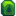

肥料
- 另见：作物生长日历
肥料用于促进农作物与树木生长，辅助耕种活动，可以在犁过的土地或者种了树的地面上使用。有三种类型的农作物肥料，分别影响作物品质、生长速度、以及耕地保水性。树肥是唯一作用于树木的肥料，只影响树木生长速度。每种农作物肥料有三个等级，树肥只有一个等级。初级肥料和高级肥料需要在种子发芽前放置到耕地方格；其他肥料则可以在植物生长的任意阶段使用。农作物肥料可作用于所有作物，包括从野生种子种植的作物。
机制
所有肥料均可制作。在达到所需的耕种技能等级或采集技能等级后即可解锁一级和二级肥料的配方，而三级肥料的配方需在姜岛购买。一级和二级肥料（第二年起）也可以全年在皮埃尔的杂货店或特定时间段营业的绿洲购买获得。
每块耕地只能施用一种肥料。肥料不能对单一方格叠加施用。
肥料可以整个季节都滞留在施用的耕地方格中。当季节交替时，混在耕地中的肥料一般会消失。但有两个例外情况：
- 如果跨季节作物（例如上古水果、咖啡豆、玉米、向日葵或小麦等）种植在施有肥料的耕地方格中，并且更替到下一个季节时作物还能继续生长，则肥料会继续保留在耕地中。
- 放置在 温室 中的肥料将一直保留在土壤中，除非用镐子移除。
注意，农作物的品质是在收成时决定的，而不是在种植时（因此可在收获前食用 农夫午餐等食物以提高收获的农作物品质）。
农夫午餐等食物以提高收获的农作物品质）。
对于可多次收获的作物，生长激素只作用于第一次收获之前。品质类肥料（即初级肥料、高级肥料和顶级肥料）则作用于每次收获。
用斧头或炸弹等方式移除农作物不会移除耕地中的肥料，要主动去除肥料只能用镐连同耕地一起移除。
肥料类型
| 图片 | 名称 | 描述 | 何时使用 | 皮埃尔 | 绿洲 | 售价 | 原料 | # 每次打造生成量 | 配方来源 |
|---|---|---|---|---|---|---|---|---|---|
| 初级肥料 | 稍微提高土壤品质，增加你种出高品质作物的几率。使用时加到犁过的土地中。 | 在种子发芽前 | (第一年春季15日后) |
1 | |||||
| 高级肥料（2） | 提高土壤品质，增加你种出高品质作物的可能性。使用时加到犁过的土地中。 | 在种子发芽前 | (第二年开始) |
1 | |||||
| 顶级肥料（5） | 大幅提高土壤品质，增加你种出高品质作物的可能性。使用时加到犁过的土地中。 | 种植前后皆可 | 5 | 齐先生的核桃房： | |||||
| 初级保湿土壤 | 这种土壤有一定几率隔夜依然保持湿润。使用时加到犁过的土地中。 | 种植前后皆可 | (第一年春季15日后) |
1 | |||||
| 高级保湿土壤（2） | 这种土壤有很大几率隔夜依然保持湿润。使用时加到犁过的土地中。 | 种植前后皆可 | (第二年开始) |
(仅限周六) |
2 | ||||
| 顶级保湿土壤 | 这种土壤能够隔夜依然百分百保持湿润。使用时加到犁过的土地中。 | 种植前后皆可 | 2 | ||||||
| 生长激素（5） | 促进叶子生长。保证能让植物的生长速度加快10%。使用时加到犁过的土地中。 注意：不会减少多次收获作物的收割间隔时间。 |
种植前后皆可 | (第一年春季15日后) |
5 | |||||
| 高级生长激素（5） | 促进叶子生长。保证能让植物的生长速度加快25%。使用时加到犁过的土地中。 注意：不会减少多次收获作物的收割间隔时间。 |
种植前后皆可 | (第二年开始) |
(仅限周四) |
5 | ||||
| 顶级生长激素 | 促进叶子生长。保证能让植物的生长速度加快 33% 以上。使用时加到犁过的土地中。 注意：不会减少多次收获作物的收割间隔时间。 |
种植前后皆可 | 1 | 齐先生的核桃房： | |||||
| 树肥 | 洒在野树上，使其快速生长，冬天也一样。在果树上不起作用。 | 在种植树种或树苗后 | N/A | 1 |
作物品质比例
注意，作物品质是在收获时确定的，而非种植时。对于一次可收获多份农产品的作物（如咖啡豆、蓝莓和蔓越莓等），品质类肥料（即初级肥料、高级肥料和顶级肥料）只影响作物的一份产出。
关于下表使用的计算公式，详见耕种#作物质量频率。
普通耕地
| 耕种等级 | 普通品质（%） | 银星品质（%） | 金星品质（%） | 平均价格 |
|---|---|---|---|---|
| 0 | 97% | 2% | 1% | 1.01 |
| 1 | 91% | 6% | 3% | 1.03 |
| 2 | 85% | 10% | 5% | 1.05 |
| 3 | 80% | 13% | 7% | 1.07 |
| 4 | 75% | 16% | 9% | 1.09 |
| 5 | 69% | 20% | 11% | 1.10 |
| 6 | 64% | 23% | 13% | 1.12 |
| 7 | 60% | 25% | 15% | 1.14 |
| 8 | 55% | 28% | 17% | 1.16 |
| 9 | 50% | 31% | 19% | 1.17 |
| 10 | 46% | 33% | 21% | 1.19 |
| 11 | 42% | 35% | 23% | 1.20 |
| 12 | 38% | 37% | 25% | 1.22 |
| 13 | 34% | 39% | 27% | 1.23 |
| 14 | 30% | 41% | 29% | 1.25 |
使用初级肥料的耕地
| 耕种等级 | 普通品质（%） | 银星品质（%） | 金星品质（%） | 平均价格 |
|---|---|---|---|---|
| 0 | 88% | 8% | 4% | 1.04 |
| 1 | 77% | 15% | 8% | 1.08 |
| 2 | 68% | 20% | 12% | 1.11 |
| 3 | 59% | 26% | 15% | 1.14 |
| 4 | 50% | 31% | 19% | 1.17 |
| 5 | 42% | 35% | 23% | 1.20 |
| 6 | 35% | 39% | 26% | 1.23 |
| 7 | 28% | 42% | 30% | 1.25 |
| 8 | 22% | 44% | 34% | 1.28 |
| 9 | 16% | 47% | 37% | 1.30 |
| 10 | 15% | 44% | 41% | 1.32 |
| 11 | 14% | 41% | 45% | 1.33 |
| 12 | 13% | 39% | 48% | 1.34 |
| 13 | 12% | 36% | 52% | 1.35 |
| 14 | 11% | 33% | 56% | 1.36 |
使用高级肥料的耕地
| 耕种等级 | 普通品质（%） | 银星品质（%） | 金星品质（%） | 平均价格 |
|---|---|---|---|---|
| 0 | 78% | 14% | 8% | 1.07 |
| 1 | 64% | 23% | 13% | 1.12 |
| 2 | 52% | 30% | 18% | 1.17 |
| 3 | 40% | 36% | 24% | 1.21 |
| 4 | 30% | 41% | 29% | 1.25 |
| 5 | 21% | 45% | 34% | 1.28 |
| 6 | 15% | 45% | 40% | 1.31 |
| 7 | 14% | 41% | 45% | 1.33 |
| 8 | 13% | 37% | 50% | 1.34 |
| 9 | 11% | 33% | 56% | 1.36 |
| 10 | 10% | 29% | 61% | 1.38 |
| 11 | 9% | 25% | 66% | 1.39 |
| 12 | 7% | 21% | 72% | 1.41 |
| 13 | 6% | 17% | 77% | 1.43 |
| 14 | 4% | 13% | 82% | 1.44 |
使用顶级肥料的耕地
使用顶级肥料时不会产出普通品质的作物。
| 耕种等级 | 普通品质（%） | 银星品质（%） | 金星品质（%） | 铱星品质（%） | 平均价格 |
|---|---|---|---|---|---|
| 0 | 0% | 84% | 10% | 6% | 1.32 |
| 1 | 0% | 75% | 16% | 9% | 1.36 |
| 2 | 0% | 66% | 22% | 13% | 1.40 |
| 3 | 0% | 57% | 27% | 16% | 1.44 |
| 4 | 0% | 49% | 31% | 20% | 1.47 |
| 5 | 0% | 42% | 35% | 23% | 1.51 |
| 6 | 0% | 35% | 39% | 27% | 1.55 |
| 7 | 0% | 28% | 42% | 30% | 1.58 |
| 8 | 0% | 22% | 45% | 34% | 1.61 |
| 9 | 0% | 16% | 47% | 37% | 1.64 |
| 10 | 0% | 11% | 48% | 41% | 1.67 |
| 11 | 0% | 7% | 49% | 44% | 1.70 |
| 12 | 0% | 3% | 50% | 47% | 1.73 |
| 13 | 0% | 0% | 49% | 51% | 1.76 |
| 14 | 0% | 0% | 46% | 55% | 1.77 |
外观
耕地上的每种肥料都有不同的外观，让你可以辨别施用了哪种肥料。
| 名称 | 未浇水 | 已浇水 |
|---|---|---|
初级肥料 |

|

|
高级肥料 |

|

|
顶级肥料 |

|

|
初级保湿土壤 |

|

|
高级保湿土壤 |

|

|
顶级保湿土壤 |

|

|
生长激素 |

|

|
高级生长激素 |

|

|
顶级生长激素 |

|

|
肥料费用
- 详见: 何时把鱼制成高级肥料
除了高级肥料之外，打造肥料一直比购买肥料便宜。
每次你打造生长激素或高级生长激素时，你会得到五个肥料。每次你打造高级保湿土壤时，你会得到两个肥料，即便只造一个肥料都比买一个肥料便宜。
下列表格对比了打造五个生长激素或高级生长激素和直接在绿洲或皮埃尔的杂货店购买五个相同的肥料价格差距。打造的成品价值按所用的原料的售价计算。
5个生长激素
|
打造 |
||
|---|---|---|
| 没有 职业专精 |
||
职业专精 |
5个高级生长激素 的费用
的费用
打造 |
|||
|---|---|---|---|
| 没有 职业专精 |
|||
职业专精 |
漏洞
历史
- 1.4：每次打造会产生物品数量现在会显示在打造菜单上，而非打造完成后才能查看数量。生长激素和高级生长激素现在可用于已经种植后的作物。
- 1.5：加入3种新肥料。现在温室内的肥料效果将不会消失，除非手动移除。
- 1.6：更改了高级肥料、生长激素与高级生长激素的配方。
| 设备 | ||
|---|---|---|
| 工匠 | 蜂房 • 木桶 • 压酪机 • 小桶 • 织布机 • 蛋黄酱机 • 产油机 • 罐头瓶 • 烘干机 • 熏鱼机 | |
| 精炼 | 煤炭窑 • 宝石复制机 • 熔炉 • 重型熔炉 • 避雷针 • 回收机 • 种子生产器 • 史莱姆压蛋器 • 史莱姆孵化器 • 树液采集器 • 虫饵盒 • 高级虫饵盒 • 鱼饵制造机 • 重型树液采集器 • 太阳能板 • 鸵鸟孵化器 • 碎骨机 • 晶球破开器 • 蘑菇树桩 | |
| 耕种 | 肥料 | 初级肥料 • 高级肥料 • 顶级肥料 • 初级保湿土壤 • 高级保湿土壤 • 顶级保湿土壤 • 生长激素 • 高级生长激素 • 顶级生长激素 • 树肥 |
| 洒水器 | 铱制洒水器 • 优质洒水器 • 洒水器 | |
| 其他 | 稻草人 • 稀有稻草人 • 豪华稻草人 • 花盆 | |
| 钓鱼 | 鱼饵 | 鱼饵 • 磁铁 • 万能鱼饵 • 高级鱼饵 • 挑战鱼饵 • 魔法鱼饵 • 针对性鱼饵 |
| 渔具 | 旋式鱼饵 • 精装旋式鱼饵 • 陷阱浮标 • 软木塞浮标 • 铅制浮标 • 寻宝者 • 倒刺钩 • 珍稀诱钩 • 优质浮标 • 声纳浮漂 | |
| 其他 | 蟹笼 | |
| 炸弹 | 樱桃炸弹 • 炸弹 • 超级炸弹 | |
| 围栏 | 大门 • 硬木围栏 • 铁围栏 • 石围栏 • 木围栏 | |
| 存储 | 宝箱 • 祝尼魔箱 • 迷你冰箱 • 石箱 • 大箱子 • 石制大箱子 | |
| 标牌 | 深色牌子 • 石牌 • 木牌 • 文字标牌 | |
| 杂项 | 楼梯 • 工具 • 工作台 • 碎木机 • 咖啡机 • 野炊工具 • 仙尘 • 农场电脑 • 加料器 • 迷你点唱机 • 缝纫机 • 电话 • 便携帐篷 • 分解机 • 迷你出货箱 • 迷你锻造台 • 铁砧 • 祝福雕像 • 矮人之王雕像 | |